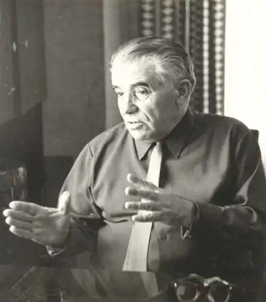
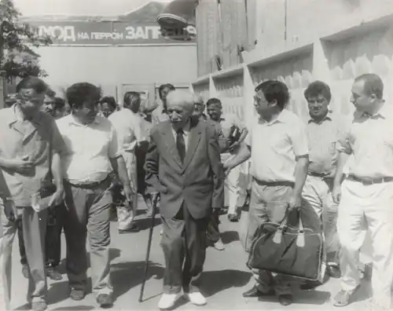

Шаміль Алядін — знакова фігура кримськотатарської літератури другої половини XX століття.
Шаміль Алядін прожив велике і багате на події життя. Він залишив після себе цілу плеяду вихованців — кримськотатарських письменників, творчих і громадських діячів. Про життя і творчість письменника написано чимало статей, нарисів, книги М. Кошчанова, Г. Владимирова, зняті телевізійні фільми. Твори Шаміля Алядіна входять в програму середніх і вищих навчальних закладів.
Шаміль Алядін (Шаміль Сеїтовіч Алядін) народився 12 липня 1912 року в селищі Махульдур, розташованому в лісах біля підніжжя гори Ай-Петрі. У чотири роки збирав дрова на зиму. У шість років вже підсапував тютюн на колгоспних плантаціях. Рубав дерева за високими скелями в п'яти-шести кілометрах від села. Його батько був селянином, людиною мудрою, іноді займався столярною справою. Крім Шаміля в родині було ще троє синів і дві дочки. При народженні Шамілю Алядіну дали ім'я Кямиль, але в ранньому дитинстві він тяжко захворів. За давнім повір'ям, щоб побороти недугу, дитині давали інше ім'я. Так сталося і з хлопчиком, який став Шамілем. Шаміль Алядін від батька успадкував любов до природи свого краю, працьовитість, прагнення до знань. Початкову освіту Шаміль Алядін отримав в місцевій школі. Щоб продовжити навчання, в 12 років Шаміль Алядін залишає свій рідний край і вступає в семирічну школу в Бахчисараї. Там його вчителем був відомий педагог Яг'я Наджі Байбуртли, який, крім турецької і арабської мови, чудово володів французькою, англійською та іспанською. Він пробудив у юнака інтерес і любов до літератури. Перші враження про рідну мову і літературу і наклали відбиток на його подальшу долю, яка виявилася на превелику радість — літературною. У 15 років він пише перший вірш "Соловей світанку" ("Тан' Буль"), присвячений відомому кримськотатарському просвітителю Ісмаїлу Гаспринському, який був опублікован в молодіжній газеті "Яш к'увет". Ось як згадує цю першу радісну подію в своєму житті Шаміль Алядін: "Мене викликали в учительську. Мене зустрів учитель кримськотатарської мови і літератури Яг'я Байбуртли, потиснувши руку, міцно обійняв і при інших вчителях показав надрукований в газеті "Яш к'увет" мій вірш. Потім він продовжив: "З Шаміля вийде неабиякий майстер слова. Після закінчення школи його необхідно направити в Бакинський університет. У цьому нам, звичайно ж, допоможе Бекір Чобан-заде, який є професором цього закладу ". Але з невідомих причин йому не судилося вчитися в Бакинському університеті. Після закінчення школи Ш. Алядін вступає в Сімферопольський педагогічний технікум (1928 — 1931 рр.). Тут він знайомиться з відомими в той час поетами Зіядіном Джавтобелі і Керімом Джаманак'ли. Після закінчення технікуму стає студентом заочного відділення Московського літературного інституту. Він навчається, пізнає секрети науки, та його ім’я в цей період не сходить зі сторінок друкованих видань. У 1932 році побачила світ його перша книга віршів "Усміхнулася земля, посміхнулося небо" ("Топрак' Кульд, кок Кульд"). Наприкінці 1932 року молодого поета призвали до армії. Він служив в 7-му полку Червоного козацтва в місті Старий Костянтинів, в Україні (1932 — 1934 рр.) Там же він закінчує полкову школу і командує кавалерійським взводом. У 1935 році виходить його збірка віршів "Пісні червоного козака" ("К'изил казак'нин' йирлари"), навіяних роками проведеними в армії. У 1936 році Шаміль Алядін стає заступником редактора кримської газети "Яни дюнья". Потім, несподівано, їде з друзями в Дагестан, і працює там шкільним учителем в гірському селі. Потім, за комсомольською путівкою, виїжджає в Узбекистан на головне будівництво II-ї п'ятирічки — Чірчікстрой, де працює екскаваторником. Надалі це служить основою для написання роману "Якщо любиш" ("Егер севсен'"). В Узбекистані він також знайомиться з узбецькою творчою інтелігенцією. У 1939 році Шаміль Алядін повертається до Криму (в цьому ж році стає членом Спілки письменників СРСР). Літературна кар'єра Шаміля Алядіна була такою стрімкою, що в 1939 році, у віці 27 років він стає головою Спілки Письменників Криму. Вперше 27-річний кримськотатарський письменник стає відомий на весь СРСР, як блискучий перекладач Шевченка після того, як на пленумі Спілки письменників СРСР в Москві 1939 року Павло Тичина виступив і прочитав кримськотатарською мовою переклад Шаміля Алядіна вірша "Заповіт" Т. Г. Шевченка, за який Шаміль Алядін був нагороджений Пам'ятною медаллю. У 1940-му році виходить його книга "Життя" ( "Омюр"), в яку входить його перший прозовий твір "Драбина" ("Мердівен"). 26 червня 1941 року Ш. Алядін іде добровольцем на фронт, командує взводом на Південно-Західному фронті. У лютому 1943 році був важко поранений. Через два з половиною місяці, проведених в госпіталі, прямує в штаб Північно-Кавказького фронту, переводиться звідти в розпорядження штабу партизанського руху в Криму. Поширює листівки із закликом до окупованого населення боротьби з загарбниками, що мало не послужило причиною розстрілу його дружини Фатьмі, що живе в цей час в Криму. У квітні 1944 року повертається до Сімферополя. Є членом Комісії з оцінки збитків, завданих війною Криму. За кілька днів до депортації Шаміль Алядін виїжджає з Сімферополя у відрядження в Алушту для набору артистів для створюваного ансамблю "Хайтарма". Повернувшись до Сімферополя (він жив в Будинку фахівців, по вулиці Жуковського), своєї сім'ї вже не застає. У його квартиру вже вселилися чужі люди. Шаміль Алядін був затриманий і депортований з Криму. Він виїжджає в Середню Азію на пошуки своєї сім'ї. В Узбекистані, в місті Чінабаде, він знаходить свою майже вмираючу від голоду, дружину і маленьку доньку Діляру. Проживши в Чінабаде близько чотирьох місяців, Шаміль Алядін з сім'єю переїжджає в Андижан, де працює в місцевій газеті. Через півроку, у травні 1945 року, завдяки сприянню голови Спілки письменників СРСР Олександра Фадєєва отримує дозвіл на переїзд в Ташкент. Там він працює директором Театру юного глядача, Директором Палацу залізничників, а з 1949 року — відповідальним секретарем правління Спілки письменників Узбекистану. У 1953-1957 рр. він навчався на вечірньому відділенні Ташкентського педагогічного інституту ім. В. Бєлінського. Шаміль Алядін є активним членом ініціативної групи, яка бореться за повернення на Батьківщину. Ш. Алядін бере участь в написанні листів на адресу керівників ЦК КПРС з вимогою повернення кримських татар на Батьківщину — до Криму, виїжджає з групою учасників кримськотатарського національного руху в Москву. За активну діяльність в національному русі неодноразово зміщується владою з займаних посад. Він об'єднує і очолює групу кримськотатарських інтелігентів і, використовуючи свій вплив і авторитет, домагається дозволу і бере активну участь у створенні ансамблю "Хайтарма", газети "Ленін байраг'и", радіопередач кримськотатарською мовою, редакції кримськотатарської поезії і прози у видавництві ім. Г. Гуляма. Шаміль Алядін домагається відновлення в Союз письменників і реабілітації виключених після депортації з СП СРСР кримськотатарських письменників. За його ініціативи та за безпосередньої участі в Узбекистані була створена секція кримськотатарських письменників при Спілці письменників Узбекистану, яку він очолював протягом багатьох років. Шаміль Алядін двічі обирається головою Літфонду СП Узбекистану, працює з письменниками Шарафом Рашидової, Камілем Яшен і ін. В період коли Шаміль Алядін був Головою Літфонду СП Узбекистану Союз Письменників досягає піку свого добробуту. З 1980-го по 1985 рік Шаміль Алядін очолював журнал "Йилдиз". За заслуги в області літератури письменник удостоєний звання "Заслужений працівник культури Узбецької РСР" (1973 р.) і "Заслужений діяч мистецтв Узбецької РСР" (1982 р.) Розквіт творчості Ш. Алядіна випав на переломний момент в історії його народу — життя в депортації. Шаміль Алядін є автором понад 70 творів, які були перекладені різними мовами. Особливе місце в творчості Шаміля Алядіна займає повість "Запрошення на бенкет до диявола" ("Ібліснін' зіяфетіне давет"), написана в 1979 році, за часів, коли радянська влада особливо нещадно розправлялася з найменшими проявами національної самосвідомості неросійських народів. Зігравши на класових акордах і революційному настрою в Криму між двома російськими революціями, Ш. Алядін зміг пройти між гострими ідеологічними рифами і першим з радянських кримськотатарських письменників розповісти про кумира далекого дитинства, про великого просвітителя Ісмаїла Гаспринського і відомого поета-демократа Усеїн Токтаргази, чиї імена довгі роки були під забороною цензури. У повісті майстерно описані рідні кримські місця, милі серцю краєвиди, народні традиції, звичаї та побут, що створює неповторний національний колорит і, між рядків, в напівнатяках — трагічна історія народу. Талант письменника і його любов до Батьківщини виявилися сильніше заборон. Після закінчення другої світової війни Ш. Алядін пише кілька творів на військову тематику, а також повісті "Син Чауші" ("Чауш ог'лу"), "Теселлі", романи "Якщо любиш" ("Егер севсень") і "Ліхтарі горять до світанку "(" Рузгардан салланг'ан фенерлер ") — плід шестирічної вивчення життя Голодного степу, який він об'їздив уздовж і поперек, в 1971 році виходить в світ повість" Дівчина в зеленому ", в 1972 році — книга повістей і оповідань" Ельмаз ". У 1987 році виходить збірка творів Шаміля Алядіна "Чорачик'лар". В однойменному творі автор описує образи своїх вчителів і красу рідного Криму. Смачна проза Шаміля Алядіна з виписаним східним колоритом нагадує старе, добре вистояне кримське вино. У 1985 році Шаміль Сеїтовіч виходить на пенсію. Для творчої роботи письменнику необхідні тиша і спокій, їх він знаходить на дачі під Ташкентом в Дормені. Там народилися нові статті, есе, повісті. Там же він починає писати історичний роман про уславленого полководця Тогай-бее, про допомогу кримськотатарського війська в боротьбі Богдана Хмельницького за незалежність України. Роман залишився незавершеним. У 1994 році Шаміль Алядін з сім'єю повернувся до Криму, до Сімферополя. Тут він ні на день не припиняє своєї літературної діяльності: у газетному варіанті виходить у світ документальний нарис "Жертви Кремля", а потім автобіографічна повість "Я — ваш цар і бог", в якій він розповідає про важкі роки життя кримськотатарського народу в депортації. 21 травня 1996 року Шаміль Алядін помер у віці 84 років і був похований на кладовищі "Абдал" в Сімферополі. У 2012 році на 100-річчя письменника на фасаді Будинку фахівців по вул. Жуковського, 20 в Сімферополі, де він жив до відходу на фронт, Ш.Алядіну встановили пам'ятну дошку, а відомий скульптор Айдер Алієв майстерно виконав в камені його барельєф. Прямими спадкоємцями Шаміля Алядіна є: три дочки — Діляра, Лейля і Ніяр; два онука — Енвер і Ширван і одна внучка — Лія, три правнучки — Травня, Олександра і Катерина і два правнуки — Емін і Кемал, один праправнук — Лука. Доля розкидала їх по всьому світу. Можливо, хтось із них ще проявить себе в літературі або іншому виді мистецтва.